10 部片单 · 恐怖 / 科幻 / 惊悚 / 悬疑 / 剧情
| # | 片名 | 类型 | 评分 / 状态 |
|---|---|---|---|
| 01 | 地球停转之日 | 科幻 / 惊悚（冷战寓言 · 黑白） | 7.3 / 95% / 83 |
| 02 | 哥斯拉 | 科幻 / 恐怖 / 灾难（特摄开山 · 核寓言） | 7.5 / 93% / 7.6 |
| 03 | 浴室情杀案 | 悬疑 / 惊悚（法国黑色 · 反转教科书） | 8.5 / 96% / 8.1 |
| 04 | 禁忌星球 | 科幻 / 惊悚（太空歌剧源头 · 彩色） | 7.7 / 96% / 80 |
| 05 | 第七封印 | 剧情 / 奇幻（存在主义 · 中世纪 · 黑白） | 8.4 / 93% / 88 |
| 06 | 不可思议的收缩人 | 科幻 / 恐怖（身体恐怖 · 尺度失调 · 黑白） | 8.0 / 83% / 73 |
| 07 | 世界大战 | 科幻 / 惊悚（外星入侵 · 冷战寓言 · 彩色） | 89% / 78 / 7.0 |
| 08 | 四百击 | 剧情 / 成长（法国新浪潮 · 处女作） | 8.8 / 99% / 8.1 |
| 09 | 偷窥狂 | 恐怖 / 惊悚（元电影 · 关于「看」本身） | 7.9 / 96% / 7.6 |
| 10 | 奇遇 | 剧情 / 悬疑（现代主义 · 失踪） | 7.9 / 92% / 7.7 |
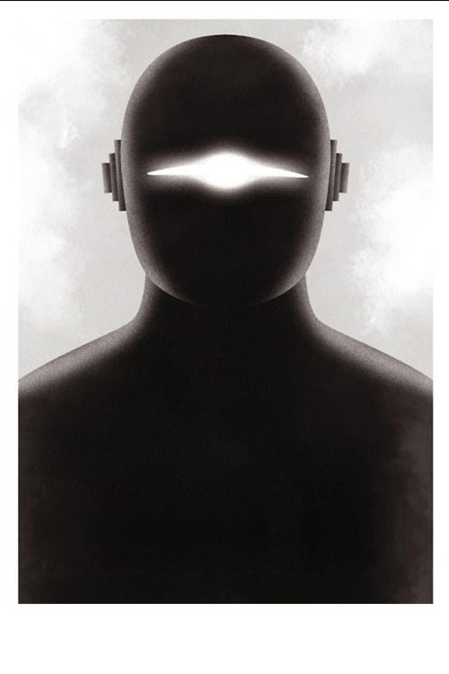
地球停转之日 The Day the Earth Stood Still
「Klaatu barada nikto。」
剧情梗概
一艘飞碟降落在华盛顿的国家广场，全副武装的军队把它围了起来。舱门打开，走下来一个和人类长得一模一样的男人。他说他叫克拉图，来这里是要给地球上所有国家带一句话。军队的回答是开枪。受伤的克拉图逃进城里，化名住进一间寄宿公寓，认识了带着小儿子博比的海伦。他找到全国最受尊敬的科学家巴恩哈特教授，然后在飞碟前对着全世界的记者，说出了那句话。
亮点
- 改编自哈里·贝茨 1940 年的短篇小说《告别主人》；编剧埃德蒙·H·诺斯把「核时代」这一层加了进去——在原著里，威胁是笼统的，在电影里它变成了原子弹。
- 配乐出自伯纳德·赫尔曼（后来《惊魂记》《迷魂记》《出租车司机》的作曲），他用了两支泰勒明琴制造那种不属于地球的声音。这是电子乐器第一次在好莱坞主流大片里担纲。
- 「Klaatu barada nikto」这句台词至今没有官方翻译，却成了影史最著名的外星语——《飞出个未来》《星球大战》《辛普森一家》都在抄它。
- 机器人戈特的戏服由一家锁具公司制作，重约 30 公斤，穿上后几乎无法行走，剧组只能靠短镜头与静态站位拼出它的每一次移动。
- 1951 年 9 月上映，正逢朝鲜战争与麦卡锡时代。评论两极：《纽约时报》称它「危险且令人反感」，也有影评人写道「这是多年来最重要的一部电影」。
- 次年获金球奖「最佳促进国际了解电影奖」；1995 年入选美国国会图书馆国家影片登记表。
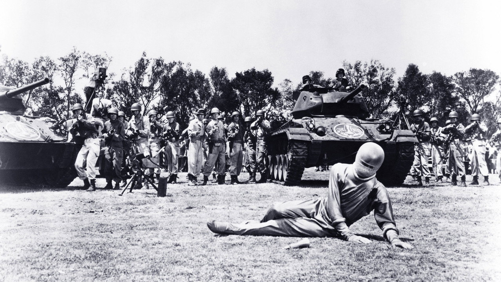
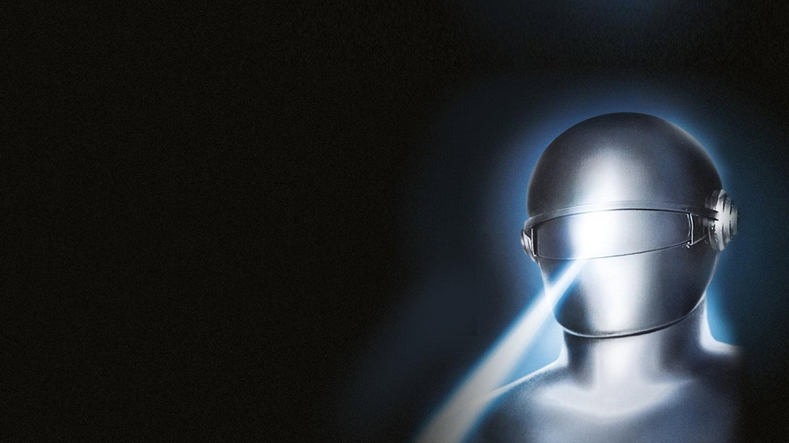
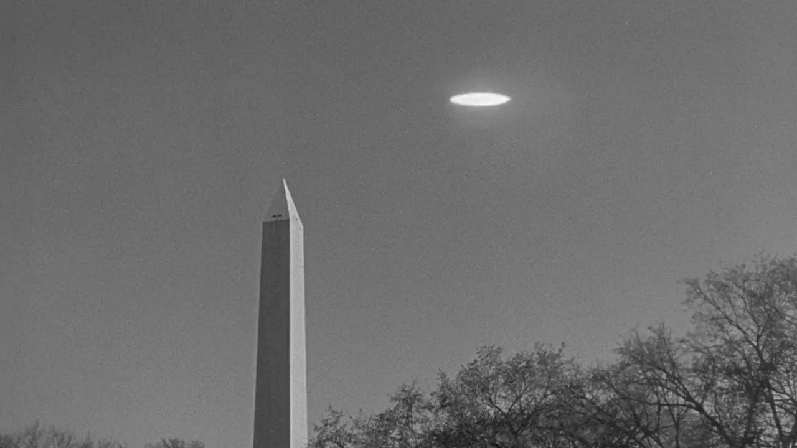
导演与主创 · 他们的历史作品
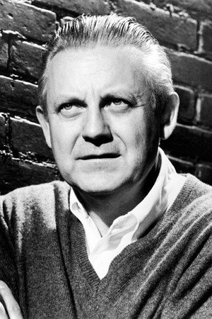
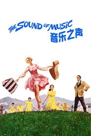
音乐之声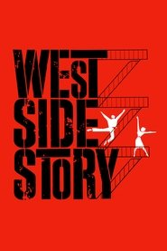
西区故事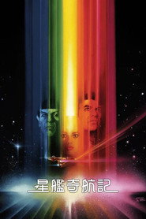
星际旅行1：无限太空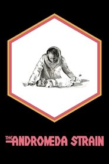
人间大浩劫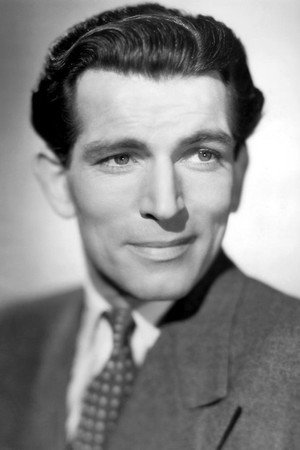
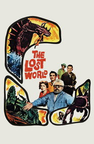
失落的世界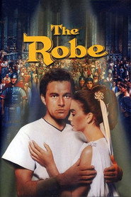
圣袍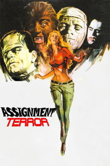
恐怖任务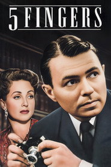
五指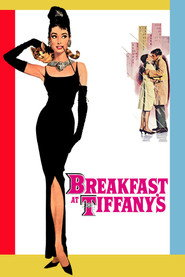
蒂凡尼的早餐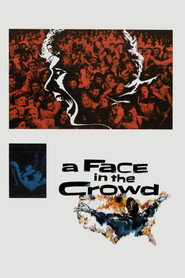
登龙一梦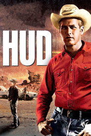
原野铁汉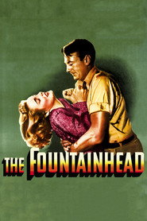
源泉短评（轻微剧透）
《地球停转之日》最了不起的地方，是它把科幻片从「怪物」里拖了出来。它没有军队对射，没有城市废墟，也没有人变身——只有一个穿西装的人站在草坪上说：你们地球人怎么互相打我们不干涉，但你们不许把战争带出这个星球。而人类对他的第一反应是开枪。这是 1951 年最诚实的一句话。第二层好看的地方在于克拉图是「住进来的」。他在寄宿公寓里吃早饭、陪小孩去墓地看父亲、观察普通人是怎么过日子的——这些段落给了这部片一种别的科幻片少有的温度。轻微剧透：真正的高潮不是毁灭，而是那句没说完的话。片尾克拉图站在飞碟前，没有威胁，也没有安慰，只说地球要么加入和平，要么被一台能瘫痪全球电力的机器摧毁，然后转身离开：「我会在你们准备好的时候回来。」戈特不是武器，是执行者。真正让人不安的恰恰是这份冷静——它不给你希望，也不给你绝望，只给一个期限。
为什么值得一看
喜欢《降临》《2001太空漫游》《第三类接触》这类「外星人来谈，不是来打」的观众；想看冷战恐惧如何被拍成一部 92 分钟的黑白科幻片的人。无血腥、无脏话，靠氛围与台词推进。内地未引进，流媒体可看。
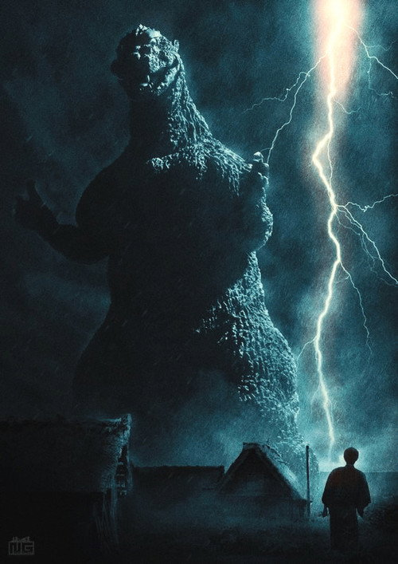
哥斯拉 Gojira
「如果再继续氢弹试验，那东西还会再出现。」
剧情梗概
日本南海，一艘打捞船在平静的海面上突然失去联系，前去搜救的第二艘船也没回来。大户岛遭到了袭击。古生物学家山根教授登岛调查，在现场发现了巨大的脚印与一枚三叶虫——结论是：这是两百万年前的侏罗纪生物，被氢弹试验唤醒了。它叫哥斯拉。它登上东京湾，一夜之间烧掉了半座城。唯一的希望是一种能瞬间抽干水中氧气的装置，但发明它的科学家芹泽不肯拿出来。
亮点
- 灵感直接来自 1954 年 3 月的「第五福龙丸」事件：日本渔船在比基尼环礁氢弹试验中被辐射污染，一名船员半年后死亡。开场的货船沉没几乎是照着这条新闻拍的。
- 东宝最初的企划叫《来自海底两万浬的巨大怪兽》。圆谷英二原本想做定格动画，因预算与时间放弃，改用「皮套 + 微缩模型」——这套方法后来定义了整个日本特摄工业。
- 哥斯拉的皮套重约 100 公斤，由中岛春雄穿着，他在里面最多只能撑三分钟。楼房倒塌、地面融化全是手工搭的微缩模型，一栋一栋拍。
- 伊福部昭的配乐（低音鼓 + 铜管 + 合唱）是「怪兽脚步声」这个听觉符号的源头；他坚持不用现成的管弦乐套路，要求乐团用打击乐去模拟「脚步与心跳」。
- 1956 年美国版《怪兽王哥斯拉》把它重新剪辑、加入雷蒙德·布尔的记者视角，删掉了大量反核内容。海外观众几十年来看到的其实是那一版。
- 片中山根教授在国会里反对再动用核武器去杀哥斯拉，理由是「我们不能让人类再一次在东京投下核弹」。这句话在 1954 年的日本是有具体重量的。
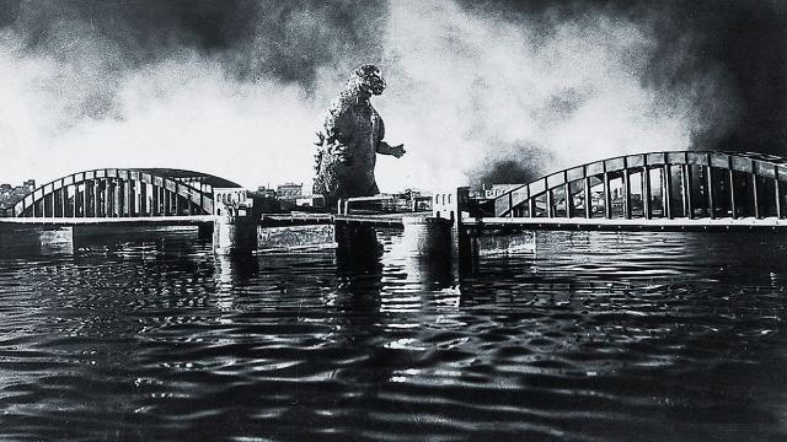
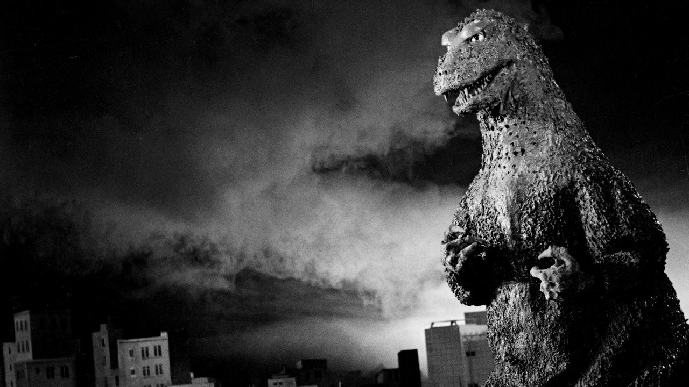
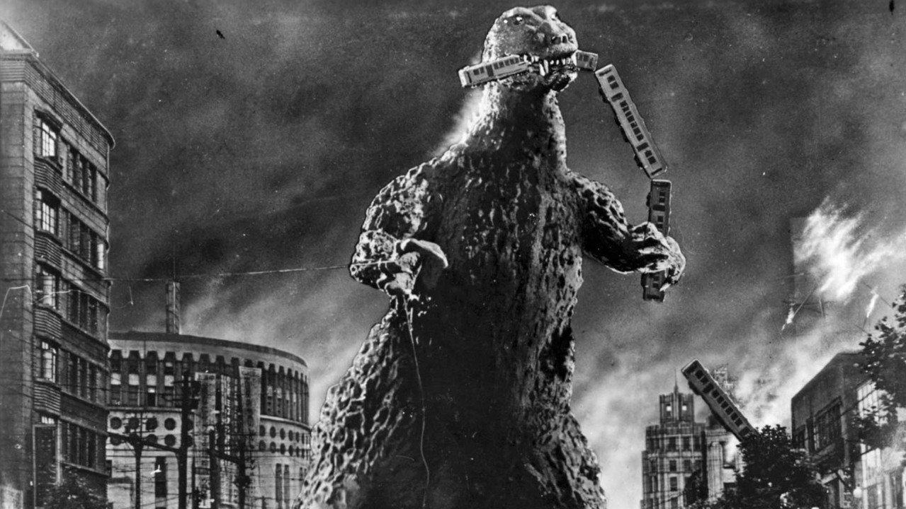
导演与主创 · 他们的历史作品
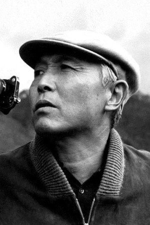
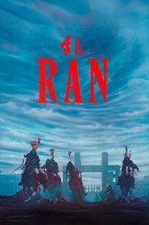
乱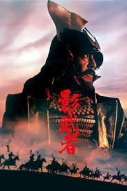
影武者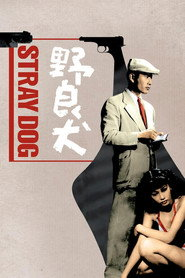
野良犬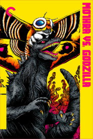
摩斯拉决战哥斯拉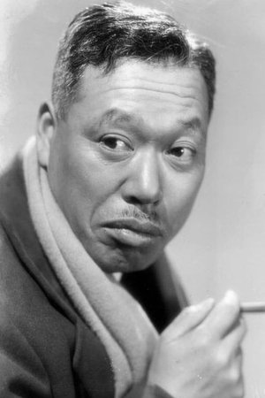
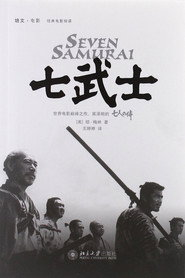
七武士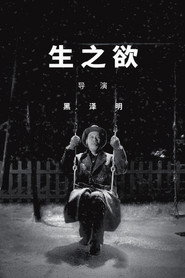
生之欲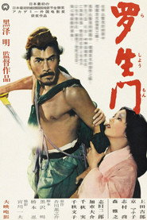
罗生门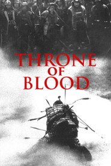
蜘蛛巢城 哥斯拉
哥斯拉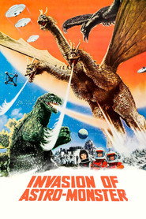
哥斯拉之怪兽大战争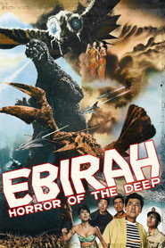
哥斯拉·伊比拉·摩斯拉：南海大决斗短评（轻微剧透）
很多人以为《哥斯拉》是怪兽片的开始，其实它一开始就不是怪兽片，是灾难片。它的第一场戏没有哥斯拉，只有一艘船在黑暗里沉没；它最后一场也不是胜利，而是一个科学家带着自己的发明沉进海底。真正让这部片撑得住的是它的克制——它不拍废墟里的哭喊，拍的是第二天早上人们排队领水、护士在病床上给小女孩测体温。轻微剧透：核心人物其实不是山根教授，而是芹泽。他发明的「水中氧气破坏剂」能杀死哥斯拉，但他一直拒绝拿出来，因为他知道一旦人类知道有这种东西，下一个被杀的就是人类自己。他最后自己穿上潜水服下去了，并在水下剪断了自己的氧气管——把配方和自己一起带走。这个结局把整部片从「打怪」抬成了「我们到底有没有资格拥有这种力量」，而这个问题到今天还没有过期。
为什么值得一看
喜欢《环太平洋》《金刚》《哥斯拉-1.0》这类怪兽片、想看源头的人；对「核」这个主题有兴趣的观众。黑白，含城市毁灭与伤员画面。1954 原版内地未引进，流媒体可看。
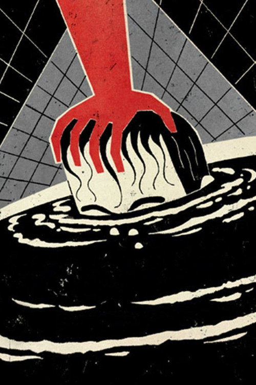
浴室情杀案 Les Diaboliques
「别把结局告诉你的朋友。」
剧情梗概
德拉萨尔寄宿学校的校长米歇尔专横、刻薄，对妻子克里斯蒂娜动辄打骂，还公开带着情妇尼古尔住在学校里。两个女人反而成了朋友。她们决定杀掉他：把他骗到尼古尔在尼奥尔的家，让他喝下掺了安眠药的酒，然后在浴缸里溺死他，装进箱子运回学校，扔进游泳池。第二天，池子被抽干了——里面什么都没有。可干洗店送回了米歇尔死那天穿的西装，也有学生发誓说，他在走廊上看见了校长。
亮点
- 改编自皮埃尔·布瓦洛与托马·纳西雅克的小说《像恶魔的女人》。克鲁佐在原著出版后 12 小时就买下了版权——希区柯克当时也在抢，慢了一步。
- 同一对作者后来写了《死者之中》，希区柯克把它拍成了《迷魂记》。而《惊魂记》里那场浴室戏、以及「尸体不在原地」这个母题，公认是从《恶魔》来的。
- 片尾字幕直接请求观众不要剧透：「Ne soyez pas DIABOLIQUES... Ne racontez pas la fin à vos amis.」——1955 年，这几乎是闻所未闻的。
- 薇拉·克鲁佐（导演的妻子）演那个心脏衰弱、随时要崩溃的克里斯蒂娜；影片完成后三年她因心脏病去世，年仅 47 岁。
- 西蒙·西涅莱五年后凭《上流社会》拿下奥斯卡影后，是法国第一位获此奖的女演员。
- 全片几乎没有配乐，也没有一滴血。最重的那场戏是抽干游泳池：几分钟里一句台词都没有，只有水泵声和一圈越来越脏的池底。
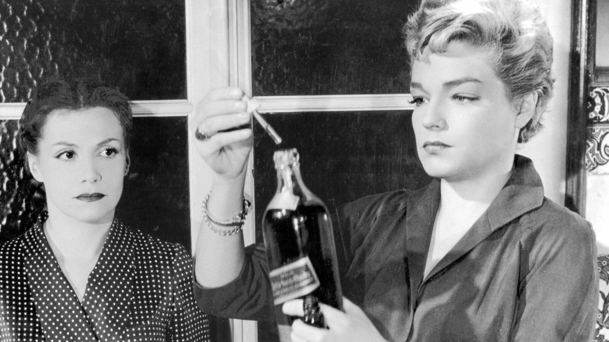
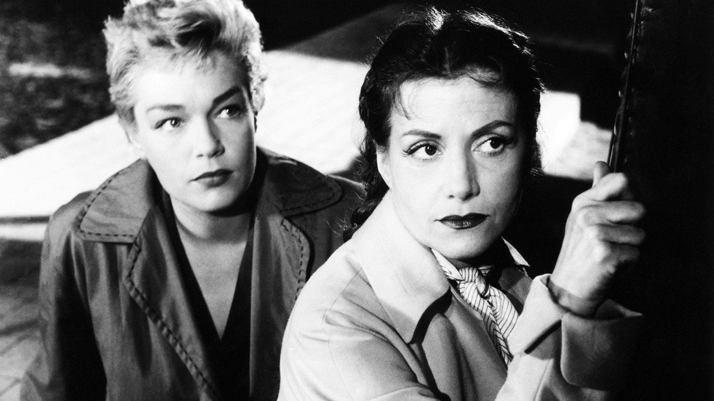
导演与主创 · 他们的历史作品
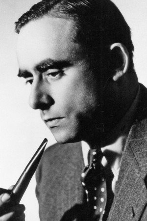
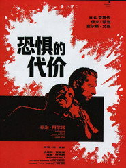
恐惧的代价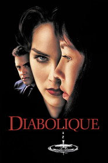
孽迷宫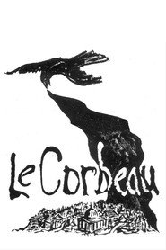
乌鸦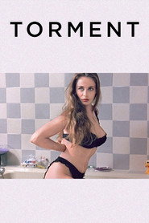
美丽的折磨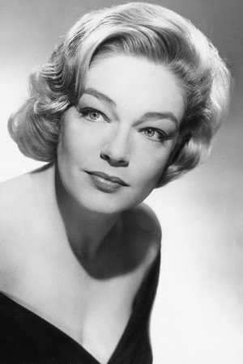
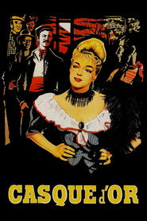
金盔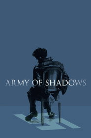
影子部队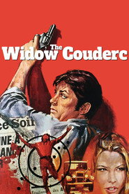
寡妇库德尔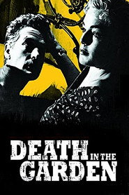
魂断花园中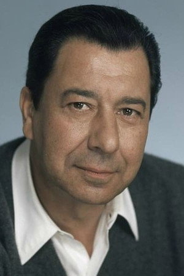
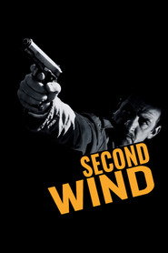
第二口气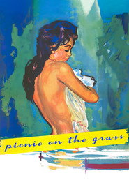
草地上的午餐短评（轻微剧透）
《恶魔》最狠的地方，是它给了你一个「鬼故事」的框架，然后在最后几分钟告诉你：不是鬼。而克鲁佐并没有骗你——所有线索都在片里，只是你被自己的期待带偏了。这部片的每一次「灵异」都同时有一个完全世俗的解释，只是你先选了那个更吓人的。轻微剧透：真正让人脊背发凉的不是尸体消失，而是克里斯蒂娜在停尸房掀开白布、发现那不是他的那一下。在此之前，观众和她一样以为事情已经结束了。而最后那个双重反转之所以能成立，是因为前面每一场戏都同时有两种读法——克鲁佐从头到尾没有撒过一次谎，他只是让你自己选错了那个。
为什么值得一看
喜欢《惊魂记》《消失的爱人》《利刃出鞘》这类反转悬疑的观众；想知道希区柯克之外还有谁能把悬念拍到这个程度的人。黑白、无血腥，含家庭暴力暗示与强心理压迫。内地未引进，流媒体可看。
禁忌星球 Forbidden Planet
「那是我脑子里的东西，放出来了。」
剧情梗概
23 世纪，巡洋舰 C-57D 抵达牵牛星四号，寻找二十年前失踪的「贝列洛丰」号探险队。星球上只剩两个人：爱德华·莫比乌斯博士，和他在这个星球上出生的女儿阿尔泰拉；还有一台叫罗比的机器人。莫比乌斯说原住民已经全部灭绝，并要他们立刻离开。当夜，某种看不见的东西开始撕扯飞船的外壳。而莫比乌斯在地下发现的那座克雷尔文明遗迹里，有一台能把思想变成实物的机器。
亮点
- 故事骨架是莎士比亚的《暴风雨》：莫比乌斯是普洛斯彼罗，阿尔泰拉是米兰达，罗比是精灵，那个看不见的怪物就是卡利班。全片没有一句台词点破，但每一场戏都对得上。
- 罗比是影史第一个有完整人格的机器人角色——它有幽默感、有分寸，还会以「会伤害你」为由拒绝执行杀人指令。《星球大战》的 R2-D2 与 C-3PO 组合基本是它的后代。
- 配乐由路易斯与贝贝·巴伦夫妇用电子振荡器和磁带循环做出，是影史第一份全电子电影配乐。当时的音乐家工会拒绝承认这是「音乐」，署名只能是「电子音调」(electronic tonalities)。
- 它是第一部把「人类坐着自己的飞船去外星球」拍成日常事务的科幻片，比《星球大战》早 21 年。飞船结构、小队配置、女性声音的电脑——都能在后来的《星际迷航》里找到原型。
- 「本我怪物」(monster from the id) 是精神分析概念第一次被写进科幻剧本：克雷尔人不是被外敌消灭的，是毁在自己无意识里的东西上。
- 米高梅投了约 190 万美元，是当时该公司最大的科幻制作；获 1957 年奥斯卡最佳视觉效果提名。
导演与主创 · 他们的历史作品
短评（轻微剧透）
今天看《禁忌星球》，最容易被它的「复古」骗过去——那些金属短裙、闪烁的控制台、一口一个「爸爸」的女儿。但剥掉外壳，它讲的是一件很硬的事：一个文明毁灭自己，不是因为敌人，而是因为它自己脑子里关着的东西。莫比乌斯以为自己驯服了它，实际上他只是每天晚上把它放出去一次。第二个优点是它的节奏：前半段一点都不吓人，几乎是度假片，等到第一具尸体出现，整部片的调子一下子转了。轻微剧透：最后那场戏里，莫比乌斯终于承认「它就是我」，但他仍然选择站在怪物那边，跟它一起消失。这个设计比「英雄打败怪物」高级太多——它把恐惧从外面移到了里面，而且明确告诉你：这不是外星人的问题。
为什么值得一看
喜欢《2001太空漫游》《星际穿越》《降临》这类「硬科幻 + 哲学命题」的观众；对影史源流（罗比 → R2-D2 → 瓦力）有兴趣的人。无血腥，含紧张追逐与少量暴力。内地未引进，流媒体可看。
第七封印 Det sjunde inseglet
「我要的不是信仰，是知识。」
剧情梗概
十字军东征十年后，骑士布洛克和侍从延斯回到瑞典，正赶上黑死病。死神出现在海边的石头上。布洛克说：我们下一盘棋——只要棋没下完，你就不许带走我。两人断断续续地下，布洛克一路穿过瘟疫中的瑞典：自鞭的苦行队伍、被绑上火刑柱的女巫、在路边死掉的铁匠，还有一对带着婴儿的流浪艺人约夫和米娅，他们什么都没做错，只是活着。
亮点
- 剧本改编自伯格曼自己 1954 年为广播写的独幕剧《木画》(Trämålning)。预算约 15 万美元，在斯德哥尔摩郊外的 Solna 片场拍了 35 天。
- 片名出自《启示录》第八章：羔羊揭开第七印时，天上寂静了约半小时。伯格曼说这就是「上帝的沉默」，也是整部片真正的主题。
- 「与死神下棋」「死神锯树」「死亡之舞」三场戏，伯格曼是直接从瑞典中世纪教堂壁画（阿尔伯特·皮克托的《死神之舞》）里搬来的构图。
- 摄影古纳尔·菲舍尔用极高反差的黑白拍出了中世纪的干燥与粗粝；死神的黑袍压在海滩的白光上，是影史最著名的视觉对位之一。
- 结尾山脊上那场「死亡之舞」是即兴拍的：那天大部分演员已经收工，伯格曼只剩二十分钟和几个愿意留下来的人，在雨里一次拍完。
- 1957 年戛纳评审团特别奖（与《卡比利亚之夜》并列）；此后被《视与听》影史百大反复收录，也让它成为「艺术电影」这个词最常被贴的一张脸。
导演与主创 · 他们的历史作品
 星球大战7：原力觉醒
星球大战7：原力觉醒短评（轻微剧透）
看《第七封印》之前，最好先把「它是一部关于死亡的哲学电影」这个印象放一放。伯格曼真正拍的是活人：侍从延斯一路在骂，铁匠和妻子在吵，流浪艺人一家在唱歌，死神反而是全片最不吓人的角色——他冷静、礼貌，甚至有点疲惫。这部片之所以到今天还没有过期，是因为它把「神不说话」这件事拍得很具体，而不是很抽象。轻微剧透：骑士从头到尾没有找到上帝。他找到的是别的东西。最后他为了给约夫一家争取逃走的时间，故意把棋盘碰乱，自己被带走。这是整部片唯一的「答案」：他没有得到信仰，但他做了一件有意义的事。伯格曼把结局留在了海边的那阵风里，而不是任何一句台词里。
为什么值得一看
喜欢《野草莓》《处女泉》《假面》这类伯格曼作品的观众；想看影史最著名的黑白影像是怎么拍出来的人。黑白，含瘟疫尸体与火刑画面。内地未引进，流媒体可看。
不可思议的收缩人 The Incredible Shrinking Man
「我仍然存在。」
剧情梗概
斯科特·凯瑞和妻子在海上遇到一团发光的雾。几个月后，他开始缩小——每周一寸。医生查不出原因，妻子路易丝从心疼到惊慌，再到不敢靠近。等他小到无法再穿任何衣服时，他住进了一个巨大的娃娃屋。某天夜里，猫把他撞进了地下室。在那里，一只蜘蛛比他大十倍，一滴水就是一场洪水，而通往地面的楼梯成了悬崖。
亮点
- 剧本由理查德·马西森（《我是传奇》《时光倒流七十年》《阴阳魔界》编剧）改编自他自己的小说《收缩人》，是 1950 年代科幻里最悲观的一部。
- 所有「巨大」道具都是真的：2.4 米高的火柴盒、直径接近 2 米的别针、放大了几十倍的水龙头。环球没有靠光学合成，靠的就是搭大模型。
- 导演杰克·阿诺德是 1950 年代最会拍「人面对非人尺度」的导演——同期的《黑湖妖潭》《狼蛛》《宇宙访客》都出自他手。
- 拍摄用了两套布景：一套正常大小、一套放大数倍，演员在两套之间切换站位，靠透视与镜头高度缝合，是纯手工业的视效。
- 那只猫「布奇」是真猫，训练了几个月；蜘蛛用的是真的狼蛛，隔着玻璃拍。
- 81 分钟的片长、不到 75 万美元的成本，却拍出了一个完整的存在主义命题——这是 B 级片预算能做到的最好样子。
导演与主创 · 他们的历史作品
短评（轻微剧透）
很多人把它当成 B 级奇观片，其实它是一部相当严肃的身体恐怖作品。前半段真正的恐怖不在变小，而在别人看他变小——医生的注视、妻子的退让、马戏团老板的哄笑。斯科特在还没缩到一英尺之前，就已经先失去了作为一个人的位置。这也是它比同期那些「巨人/巨兽片」高级的地方：它关心的是关系，不是尺寸。轻微剧透：后半段他掉进地下室，家变成了荒野：爬一把椅子要借线，喝水只能等水滴。最后他一个人站在纱窗前，说出那段独白——「我仍然存在」。这部片最厉害的是它没有把结局写成悲剧，也没有写成胜利，只是让一个已经无法被世界容纳的人，承认自己还在。
为什么值得一看
喜欢《缩小人生》《异形》《怪形》这类「尺度失调 / 身体失控」题材的观众；对存在主义有兴趣的人。黑白，含惊悚打斗与动物画面。内地未引进，流媒体可看。
世界大战 The War of the Worlds (1953)
「人类所有的武器，都对它没用。」
剧情梗概
一颗「陨石」落在加州小镇附近的山里，居民跑去围观，只有物理学家克莱顿·福雷斯特觉得不对——他的盖革计数器一直在响。夜里那东西自己拧开了盖子，从里面伸出一台会飞的机器，用一道看不见的热线把围观的人全部蒸发。同一时刻，全球各地都落下了同样的东西。军队开上来，原子弹投下去，没能挡住它们。城市被清空，人类开始逃亡，而克莱顿要在一片废墟里找到那个他答应过要照顾的女人。
亮点
- 改编自 H·G·威尔斯 1898 年的小说《世界之战》；制片人乔治·帕尔把故事从维多利亚时代的英国搬到了 1950 年代的南加州，也把「帝国入侵」换成了当时真正让人睡不着的那种恐惧。
- 第 26 届奥斯卡拿下最佳视觉效果奖，另提名最佳剪辑与最佳录音；2011 年入选美国国会图书馆国家影片登记部。
- 火星机器是三足的「飞碟+机械臂」造型，靠细钢丝吊拍，一共只做了两台；那台机器的设计后来成了外星入侵题材几十年的标准像。
- 全片最有名的设计是「看不见的敌人」：热线本身不画出来，只拍它扫过之后留下的火焰与灰烬——1953 年没有一家公司敢这么拍。
- 派拉蒙为这部片投入 200 万美元，是当时科幻片的顶格预算；剧组借用了美军真实的装甲部队和海军陆战队拍撤离场面。
- 1988 年的《世界大战》电视剧是它的正统续集，设定改成火星人只是陷入休眠、母星其实叫 Mor-Tax。
导演与主创 · 他们的历史作品
短评（轻微剧透）
现在看它容易只看到特效，但它真正的锋利之处在开头那半小时：没人知道发生了什么，所有人都在按常识处理——以为是陨石、以为能用仪器测、以为军队来了就能解决。整部片里人类唯一做对的判断，是「我们的武器都没用」。轻微剧透：结局不是人类打赢的。火星人是被地球上的细菌杀死的，而这一点在开头就被观众知道了——真正的悬念不是「人类会赢吗」，是「一个已经不相信任何秩序的人，还要不要回去找另一个人」。这也是它和 2005 年斯皮尔伯格那一版最大的区别：那一版讲一家人怎么活下来，这一版讲文明被抹掉之后，还剩下什么值得捡回来。宗教那一层不是装饰：最后他们躲进教堂，而第一个死掉的也是教堂里的人。
为什么值得一看
喜欢《地球停转之日》《独立日》《郊区故事》这类「外面有东西来了」的观众；想看 CG 之前的手工特效能做到什么程度的人。彩色，含城市毁灭与烧灼画面，惊吓以氛围为主。内地未引进，流媒体与碟片可看。
四百击 The 400 Blows
「我不知道我是谁，但我知道我不要什么。」
剧情梗概
13 岁的安托万·杜瓦内尔住在巴黎一间很小的公寓里，母亲吉贝尔特上班、打扮、偶尔哭，继父于连脾气不好，学校里的老师只会罚站。他和同学雷内逃学，逛游乐场，还在街上撞见母亲和另一个男人接吻。为了凑钱，他偷了继父办公室的打字机，卖不掉，又去还，被当场抓住。父亲把他送进了警察局，然后是少年管教所。探视那天，母亲说：你别回来了。
亮点
- 特吕弗的处女长片，拍的时候 27 岁。他此前是《电影手册》最尖刻的影评人之一，也是「作者论」最激烈的鼓吹者——这部片就是他的宣言。
- 让-皮埃尔·利奥德是从报纸上的招募广告里选出来的，当时 14 岁，完全没有表演训练。这个角色他后来一直演到 1979 年的《爱情长跑》。
- 全片在巴黎实景拍摄，几乎没有搭景；摄影亨利·德卡埃大量使用手持与长焦跟拍，是新浪潮最具辨识度的运动方式。
- 片名「四百击」来自法语俚语 faire les quatre cents coups，意思是「胡作非为」——不是真的打四百下。
- 1959 年戛纳最佳导演奖；1960 年奥斯卡最佳原创剧本提名。
- 结尾那三个推轨镜头——安托万跑向海边、转身、定格——是影史被引用最多的结尾之一。
导演与主创 · 他们的历史作品
短评（轻微剧透）
看《四百击》最舒服的地方是它不控诉。特吕弗没有把安托万的父母写成坏人，也没有把学校写成牢笼；他只是让镜头跟着这个小孩在街上、在房间里、在被关起来的地方走，让你自己感到那种「没有人真的在看他」的冷。母亲不是不爱他，她只是有自己的日子要过——而这比恶意更难对付。第二个优点是它的轻：逃学、游乐场、偷牛奶，这些段落拍得像喜剧，正因为这样，后面每一记耳光才格外疼。轻微剧透：结尾安托万从管教所跑出来，一路跑到海边，海水漫过脚踝，他回过头，镜头定格在他脸上。很多人以为那是自由，其实不是——他跑到了陆地的尽头，前面已经没有路了。特吕弗把这个定格留了很久，然后片名出现，就这样结束。这也是为什么这部片到今天还有效：它没有给答案，只给了一张脸。
为什么值得一看
喜欢《精疲力尽》《童年往事》《一一》这类成长题材的观众；想理解「法国新浪潮」到底新在哪里的人。黑白，无暴力（含少量体罚与关押）。内地未引进，流媒体可看。
偷窥狂 Peeping Tom
「恐惧，是世界上最美的表情。」
剧情梗概
马克·刘易斯是电影公司的摄影助理，业余拍一些没人看的片子。他也在杀人：把女人骗到镜头前，在她们脸上架一面镜子，让她们看见自己死前的表情，然后录下来，回去一遍遍重看。他父亲是研究儿童恐惧的心理学家，马克从小就是实验对象——每一次惊吓都被拍了下来。他认识楼下的邻居海伦，一个单纯、好奇的年轻女孩；海伦的天真，让他第一次犹豫了。
亮点
- 迈克尔·鲍威尔刚拍完《红菱艳》《黑水仙》《平步青云》——这部片上映后，他的导演生涯基本中断。英国影评界集体攻击它，《泰晤士报》称它「令人作呕」，发行方很快撤片。他用二十年才慢慢恢复声誉。
- 剧本由里奥·马克思写，他二战时在英国密码部门工作，把「记录」与「观看」这两个动作的道德问题写进了每一场戏。
- 它是影史第一部真正讨论「摄影机即暴力」的电影——比《放大》(1966)、《窃听大阴谋》(1974) 都早。马丁·斯科塞斯是最早公开为它辩护的人之一。
- 开场 90 秒完全从凶手的第一人称视角拍：观众一上来就是那台机器，你看见的每一张脸，都是被你拍下来的。1960 年，这极其大胆。
- 莫伊拉·希勒（《红菱艳》的女主）演海伦那位失明的母亲；安娜·玛西演海伦，这是她第一次主演。
- 马克的摄影机里藏着一把刀——这个道具是真的做出来的机械装置，不是特效。
导演与主创 · 他们的历史作品
短评（轻微剧透）
《偷窥狂》常被说成「一部关于偷窥的电影」，其实它更狠：它是一部关于「看电影」这件事本身的电影。鲍威尔从头到尾把你放在凶手的位置上——开场你就是那台机器。而当你意识到这一点的时候，你已经看完了。这也是它在 1960 年激怒英国影评人的真正原因：它把观众和凶手画上了等号。轻微剧透：最重的一击在结尾。马克被围住之后，没有反抗，没有辩解，他调转自己的摄影机对准了自己，然后按下了那一刀。整部片最后一个画面，是他拍下的自己的死。鲍威尔在这里完成了一个闭环：从「用镜头杀人」到「用镜头杀自己」，中间没有任何一句控诉。你甚至很难说它是恐怖片——它更像一份冷冰冰的证词。
为什么值得一看
喜欢《惊魂记》《放大》《八部半》这类「关于观看 / 元电影」作品的观众；对电影媒介本身有兴趣的人。含暴力与惊吓画面，心理压迫感强。内地未引进，流媒体可看。
奇遇 L'Avventura
「安娜去哪了？没有人再问这个问题。」
剧情梗概
一群罗马的有钱人乘游艇去西西里外海的荒岛。安娜在岛上消失了。她的未婚夫桑德罗和她的好友克劳迪娅开始找她——穿过岩壁、渔村、旅馆、报社、城市。找着找着，两个人靠在了一起。安娜始终没有出现，消失这件事也没有被解释。等他们抵达西西里的一座旅馆，寻找已经变成了一件谁都不再提起的事。
亮点
- 1960 年戛纳首映，据在场记者回忆，放映过程中嘘声不断；第二天它拿到了评审团特别奖。此后它被公认为现代电影的分水岭之一。
- 安东尼奥尼把「失踪」当成了叙事主体：影片用了近半小时拍搜索，然后不再回头。这不是悬疑片的套路，是反套路。
- 莫妮卡·维蒂凭此片成为欧洲艺术片的标志性面孔，此后主演了安东尼奥尼「现代爱情三部曲」的另外两部《夜》(1961) 与《蚀》(1962)。
- 全片在西西里（包括埃奥利群岛的利斯卡·比安卡）与罗马实景拍摄，大量使用长镜头、自然光与环境声音。
- 1962 年《视与听》影评人投票把它列进影史前十。它对「现代人无法相爱」这个命题的确立，影响一直延续到今天的欧洲艺术电影。
- 145 分钟的片长当年被多个发行方要求剪短，安东尼奥尼全部拒绝。
导演与主创 · 他们的历史作品
短评（轻微剧透）
如果把它当悬疑片看，你会很失望——安娜到底去哪了，安东尼奥尼从头到尾没打算告诉你。他关心的是她消失之后，剩下的人怎么继续。这也是这部片最需要耐心的地方：它的节奏不是「推进」，而是「停留」。轻微剧透：真正的变化发生在克劳迪娅和桑德罗之间。他们在找人的过程中变成了情侣，而这段关系从一开始就带着「这是顶替来的」这种说不出口的东西。最后一场戏在西西里的一座旅馆外，克劳迪娅看着桑德罗和别的女人纠缠，然后走过去，把手放在他头上——没有原谅，也没有离开。安东尼奥尼在 1960 年就把「在一起但无法抵达对方」拍完了，之后五十年的人基本都在为他做注脚。
为什么值得一看
喜欢《夜》《蚀》《放大》与欧洲艺术片的观众；能接受慢节奏、无答案叙事的人。黑白，无暴力，情绪压抑。意大利 / 法国合拍，内地未引进，流媒体可看。